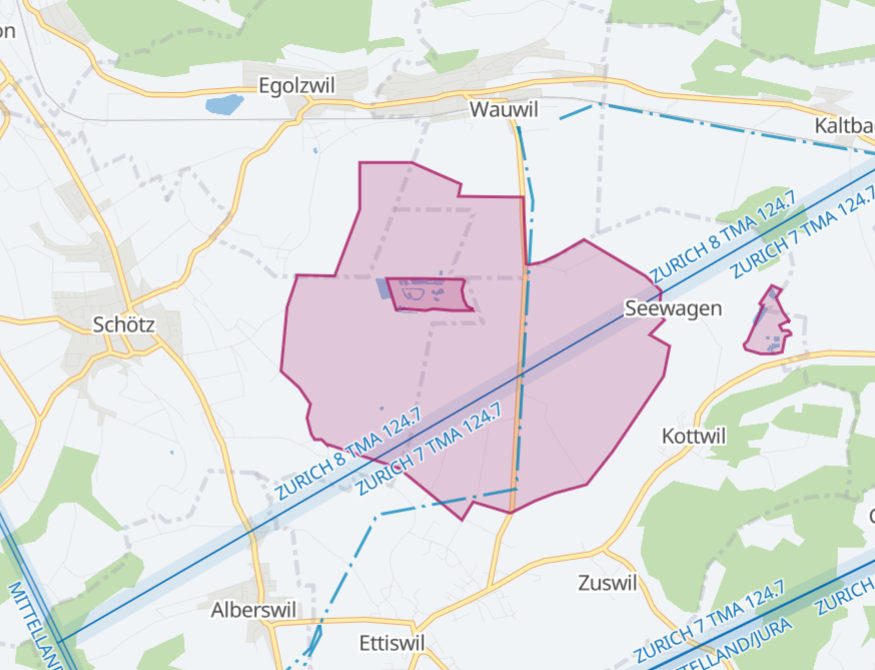
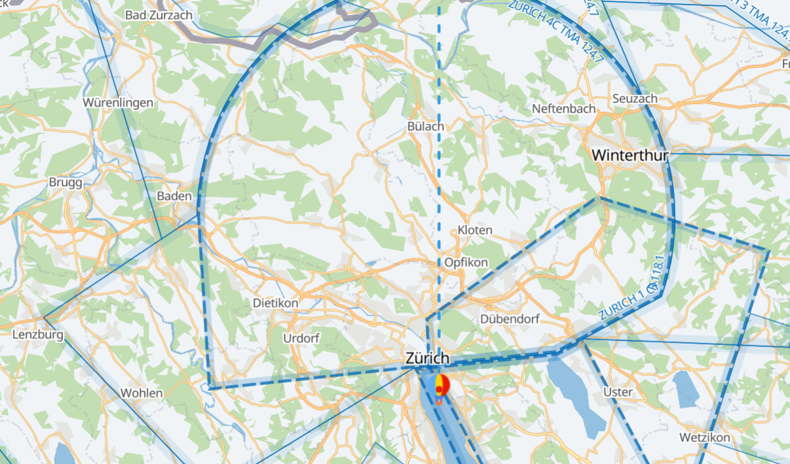
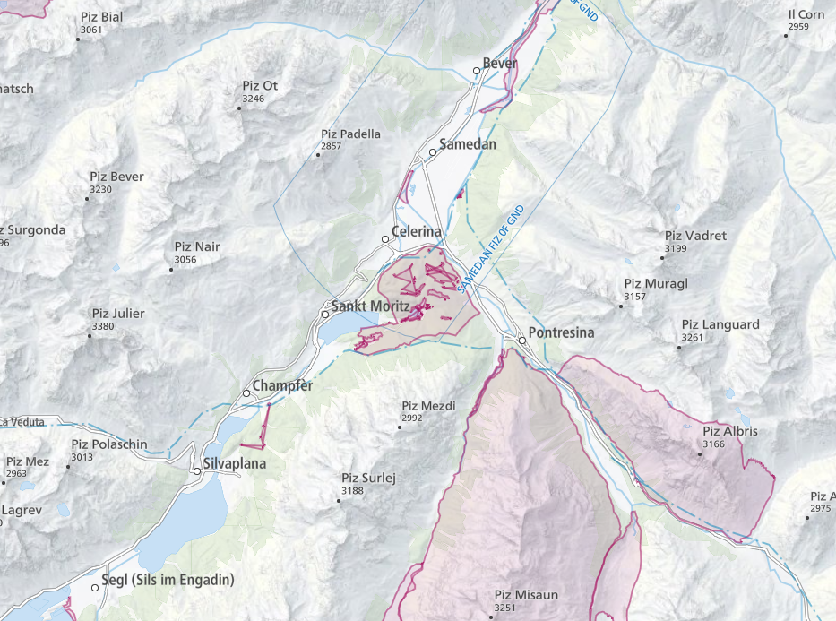
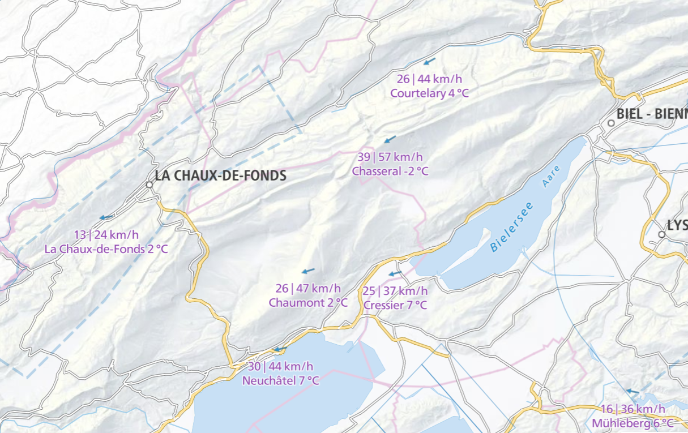

Blog > Entwicklung der Ballometer Karte
In meiner Freizeit arbeite ich gerne am Ballometer. Das ist eine Sensorbox für Heissluftballone, die verschiedene Parameter wie zum Beispiel die Lufttemperatur und die GPS Position messen kann. Weil das Gerät Zugriff auf GPS Daten hat können wir die Position des Ballons live auf einer Karte auf einer Webseite anzeigen. Hier möchte ich einige Eigenschaften dieser Ballometer Karte hervorheben.
Die rote Zone ist ein Naturschutzgebiet, das in der Aussenlandeverordnung AuLaV eingetragen ist. In diesem dürfen keine Ballone landen. Datenquelle ist swisstopo. Die blau gestrichelte Linie ist eine Hochspannungsleitung. Die Daten dazu wurden von OpenStreetMaps bezogen. Zudem sind die Luftraumgrenzen des Flughafen Zürich-Kloten eingetragen. Lufträume werden von der Plattform openaip bereitgestellt.
Hier sehen wir die Lufträume rund um Zürich-Kloten. Die gestrichelte Line zeigt an, wo die CTR endet, also jener Luftraum, der den Flughafen direkt umgibt.
Ab 1. März 2021 ist das Kartenmaterial von swisstopo frei verfügbar. Ich habe daraufhin die Karte gleich umgestellt auf diese neue Datenquelle. Hier sehen wir die schönen Reliefschattierungen, für welche die Schweizer Kartografie bekannt ist.
Damit der Pilot oder die Pilotin jederzeit die aktuellen Windmesswerte von MeteoSchweiz sehen kann, habe ich hier auf der Karte die Messungen eingezeichnet. An jenem Tag hatte es wohl etwas zu viel Bise für eine Ballonfahrt.
Mit Karten arbeiten macht mir sehr viel Spass und es ist wirklich vieles möglich. In der Zukunft könnte ich mir vorstellen, neben dem Standort des Ballons auch das Verfolgungsauto auf der Karte einzuzeichnen. Auch wäre es toll eine Karte zu haben, auf der alle Ballone eingezeichnet sind, die im Moment in der Luft sind.
Zum Schluss ist hier der Link zu einer Ballometer online Karte mit einer Fahrt am 21.02.2021: